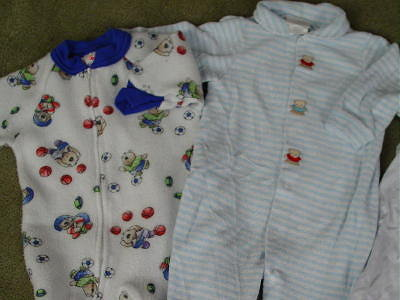
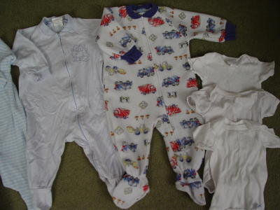

Carters Footed Sleepers:
- 26- Fleece footed
pajama, 100% polyester, size 0-6 months.
Has sports bear theme, shows normal wash wear.
- 27- Terrycloth
footed pajama, 100% cotton, size 3-6 months.
Has blue/white horizontal stripes & bears between snaps.
|

Carter's footed sleepers &
onsie:
- 28- Fleece footed
pajama, 100% polyester, size 6-12 months.
Has trucks/ construction theme on fabric, shows normal wash wear.
- 29- Footed 100%
cotton knit pajama with zipper closure, size 6-9
months. Has blue/white horizontal stripes & has a bear
pictured on the front.
- 30- 1 solid white
100% cotton onsie, size 0-3 months
- 31- Gerber onsie: 1
solid
white onsie, 100% cotton, size Small.
- 32- JC Penny onsie: 1
solid
white onsie, 100% cotton, size Small.
|